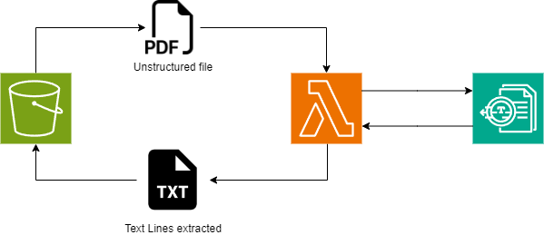

SCC
Brasil
os cloud gurus
Software Cloud Consulting
Your software development, cloud, consulting & shoring company
Amazon Textract
Introduction
Amazon Textract is more than just your typical optical character recognition (OCR) tool. It goes beyond simple text extraction to understand and extract specific data from various document formats, including PDFs, images, and scanned documents. Let's dive into the details.
How Amazon Textract Works
Textract uses machine learning models to automatically extract text, handwriting, layout elements, and data from scanned documents. Here's how it works:
- Document Ingestion: Upload your documents to Textract.
- Preprocessing: Textract processes the document, identifying text regions, tables, and other layout elements.
- Feature Extraction: The ML models analyze the content, extracting relevant data.
- Output: Textract provides structured data that you can use for further processing.
Use Cases
Textract finds applications across industries:
- Financial Services: Automate loan processing by extracting mortgage rates, applicant names, and invoice totals.
- Healthcare and Life Sciences: Extract patient data from health intake forms and insurance claims.
- Public Sector: Efficiently process government-related forms like tax documents and business applications.
Types of Files Accepted
Textract can handle PDFs, images, and scanned documents. Whether it's an invoice, a medical report, or a handwritten note, Textract has you covered.
Advantages
- High accuracy in data extraction.
- Customizable features for specific business needs.
- Quick processing, saving hours of manual effort.
Using Textract directly in the AWS Console UI
Textract can be used directly in the AWS Console UI. You can upload a document and see the results in the console. The console provides a simple way to test Textract and understand its capabilities. The console also provides a way to test the different features of Textract, like the detection of tables, forms, and the extraction of data from these tables and forms. For a quick ad-hoc necessity, the console is a good way to use textract to extract signature, tables, forms and text from pdf or images.
Using Textract with SDKs
Integrate Textract into your applications using the boto3 SDK. The Python SDK allows you to interact with Textract programmatically, automating your document processing pipelines. There is also a package called Textractor, which simplifies the use of Textract, if you don't want to use boto3 directly.
Extracting text from a pdf using Lambda

You can find on this repo : aws-textract An simple example of how to use Textract with Lambda to extract text from a PDF file and save it to an S3 bucket.
The repo contains a cloudformation template that create the S3 Bucket, the Lambda function and the IAM role for the Lambda function.
Async or Sync and pagination
To use the Textract API you can use the sync or async methods. The async version is used for large files, and the sync version is used for small files.
The lambda code on this example is using the async methods but with a predefined sleep time(5 minutes max) to wait for all the document to be processed.
The pagination is also implemented on the lambda code, to handle the pagination implemented by the Textract API in case of a big document analisys.
Conclusion
Amazon Textract is a powerful tool for extracting data from documents. It's a great way to automate data extraction and processing, saving time and effort. Whether you're in finance, healthcare, or any other industry, Textract can help you streamline your document processing workflows.
Autor

Daniel do Nascimento
AWS Developer
3 x AWS Certified
Terraform Certified